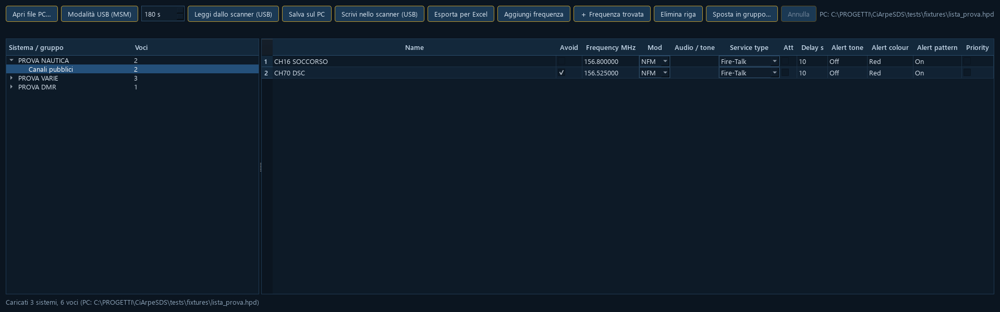

New in 1.0.5
Several lists together, timing under control (scan counter, 15-minute AVOID, reply times measured on each channel with the suggested delay), channel card with a summary of your listening, SDS display with today's activity, ADSBItalia map that finds the aircraft heard.
In test – airband transcription: separate experimental package, English only (CiArpeSDS_Trascrizione_Aerei_beta.zip, 133 MB): text of the voice, who is talking and the aircraft on the map. The text can be wrong. Extract the zip into the CiArpeSDS folder and restart; your feedback helps us: write to us. Speech model SkyControl ATC ASR 110m by srinath-exe (CC-BY-4.0).
See it in 90 seconds
What it does
Network audio, instantly
Hear the scanner on your PC as soon as the program starts. Bass and treble, sub-tone cut, voice filter and noise reduction that keeps the words.
RF waterfall
The SDS200's own spectrum up to 17 MHz wide: click a peak and listen to it, with knob and adjustable steps.
Range search with modulation
Type two frequencies, pick AM/NFM/FM and the scanner searches there. STOP, RESUME and NEXT when it finds something.
Close Call and Discovery
Find nearby transmitters and active frequencies; hits go to a list with duration and one-click replay.
From search to your list
Put a found frequency into any group of your favorites list in one click: “+ Found frequency”, “✔ Insert here”.
List editor
Spreadsheet-style channel list: edit, move, export to Excel, read and write the scanner over USB with an automatic backup.
Listen from your phone
A web page on your home network: audio, frequency, channel, S-meter and scanner keys on your mobile.
Recordings and history
One recording per frequency per day, activity log, statistics by hour and weekday, alerts on the channels you care about.
Scanning never gets stuck
Automatic skip of channels that never stop transmitting, temporary AVOID and a warning if the scanner stops answering.
SDS200 display and keys
The scanner screen mirrored live, with keypad, knob, CHANNEL, AVOID, volume and squelch.
Decoders
DSC included; POCSAG, FLEX, APRS and ACARS with free add-on tools (see the guide).
English and Italian
Interface and guide in both languages – one click on the flag.
Screenshots

Price
Free trial
- Every feature for 14 days from the first start
- No sign-up, no card
- Sample list with public amateur-radio frequencies
Full licence
- One-time payment via PayPal, no subscription
- Activation code by email, usually within one day
- Works offline, on your own PCs
- 14-day refund, no questions asked
Write “CiArpeSDS” in the payment note. The code is sent to your PayPal email. Terms of sale and privacy
Getting started
- Download the trial ZIP and extract the whole folder (e.g. into Documents).
- Start
CiArpeSDS.exe. Windows may show “Unknown publisher”: More info → Run anyway. - On first start type your scanner's IP address (SDS200 network menu). Click the 🇬🇧 flag for English.
- Press INFO for the full guide. No scanner? Try it with
CiArpeSDS.exe --simulatore. - Like it? Buy the licence and press ACTIVATE (next to INFO): purchase email and the code you received.
FAQ
Does it work with the SDS100, BCD436HP or BCD536HP?
No: CiArpeSDS is built and tested for the SDS200 only (network link, audio, commands and RF waterfall).
Do I have to install anything?
No. Extract the folder and start the program. To uninstall, delete the folder.
What happens after 14 days?
The ACTIVATE window appears at start-up: buy the licence, enter the code and carry on with your settings, recordings and lists.
Can I use it on another PC?
Yes, on your own computers: same code, same email. Keep the email with your code.
Will it change my scanner's list?
Only when you press “Write to scanner”, after a confirmation and after saving a backup of the current list.
Does it send data anywhere?
No. It works on your home network; activation is checked on your PC without internet.
Is the trial download safe?
It is published on GitHub with its SHA-256 checksum next to it. Windows SmartScreen warns about any new unsigned program; the files are the ones listed on the release page.